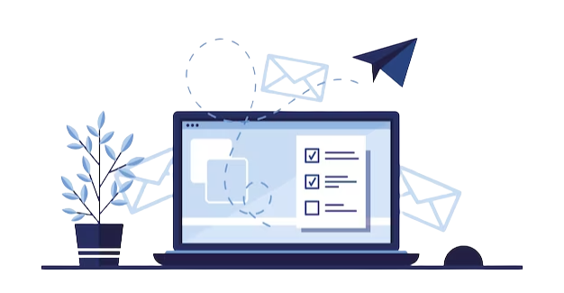

In today's digital age, email communication has become an essential part of our daily lives. Whether it's for personal or business purposes, sending emails is a common practice for most of us. However, sending an email is not just about typing a message and hitting the send button.
It involves a complex process of message transmission and delivery, which is essential for successful email communication. One of the crucial components of this process is SMTP, or Simple Mail Transfer Protocol, which is responsible for transferring emails from the sender's server to the recipient's server.
Mastering SMTP is crucial for ensuring successful email delivery, but it can be a challenging task for many. There are several factors involved in SMTP that can affect the delivery of your emails, including authentication, spam filters, DNS records, and much more. Therefore, it's essential to understand the basics of SMTP and learn some tips and tricks for successful email delivery.
One of the most important things you can do to ensure your emails are delivered is to authenticate them. Email authentication helps identify the source of an email message, and it prevents spammers from spoofing your domain name. There are several authentication methods available, including SPF (Sender Policy Framework), DKIM (DomainKeys Identified Mail), and DMARC (Domain-based Message Authentication, Reporting, and Conformance). By using these authentication methods, you can improve email deliverability and prevent your messages from being marked as spam.
A clean email list is critical for successful email delivery. If your list contains a lot of invalid email addresses, spam traps, or inactive subscribers, your emails are more likely to be marked as spam. Regularly clean your email list by removing invalid email addresses, unsubscribing inactive subscribers, and avoiding purchased or rented email lists.
Your email reputation is based on how your subscribers interact with your emails, and it plays a crucial role in email deliverability. If your subscribers are marking your emails as spam, your email reputation will suffer, and your emails may be sent to the spam folder or blocked altogether. Use email monitoring tools like SenderScore or Reputation Authority to monitor your email reputation and identify any issues that may be affecting your deliverability.
A dedicated IP address is an IP address used exclusively by your email campaigns. By using a dedicated IP address, you can control your email reputation and prevent it from being affected by other senders on a shared IP address. A dedicated IP address also allows you to establish a sending history, which can help improve your email deliverability over time.
Segmenting your email list is essential for successful email marketing. By segmenting your list based on subscriber behavior, interests, or demographics, you can send more targeted and relevant messages that are more likely to be opened and engaged with. Segmenting your list can also help improve your email deliverability by ensuring that your messages are sent to subscribers who are interested in receiving them.

Using a consistent From address in your emails can help improve your email deliverability. When your subscribers recognize your From address, they are more likely to open and engage with your emails. Using a consistent From address also helps establish your brand identity and improves your email reputation over time.
Optimizing your email content is essential for successful email delivery. Use clear and concise subject lines that accurately reflect the content of your email. Keep your email content relevant, engaging, and easy to read. Use a clear call to action that encourages subscribers to take action, whether it's to click a link, make a purchase, or fill out a form.
In summary, mastering SMTP is essential for anyone who wants to ensure successful email delivery. With the tips and tricks outlined in this post, you can troubleshoot common issues and optimize your email campaigns for maximum impact. Remember to pay attention to your email server settings, authentication protocols, and reputation management to avoid spam filters and ensure your messages reach your subscribers. By following these best practices and staying up-to-date with the latest email marketing trends, you can build a strong email list and grow your business with confidence.